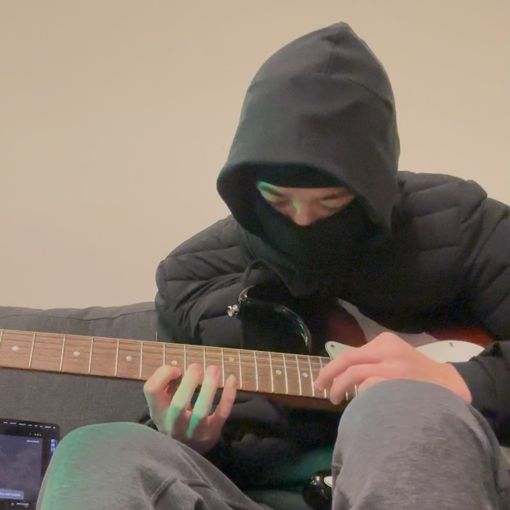
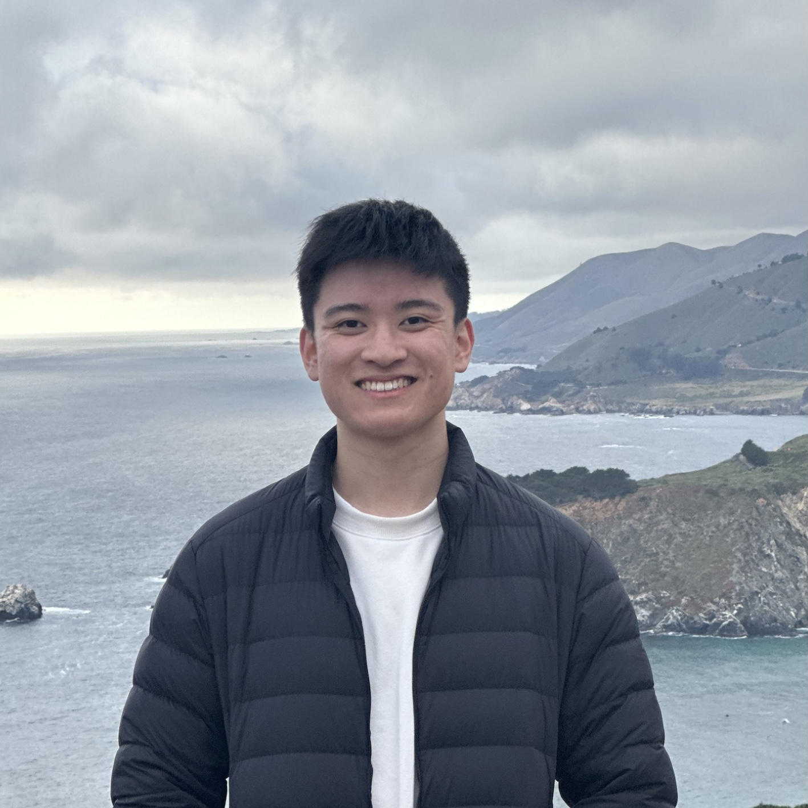
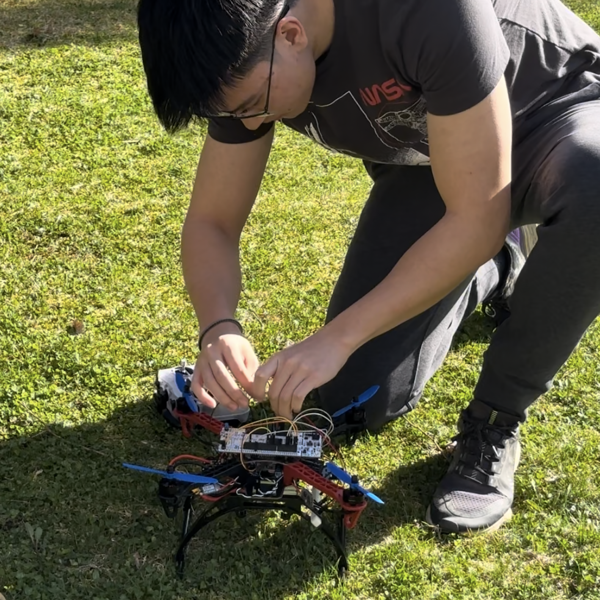

- Currently interning at UCR working on humanoid robot software for control, infra and VLAs.
- Interned at Zipline, owning the flight computer RF system validation software and hardware suite.
- Interned at Questrade, conducting UX Research studies with hundreds of users. At this point, I realized my goals were extrinsically motivated and did some soul searching. Decided to learn how to build robots.
- Studying Systems Design Engineering at the University of Waterloo.
- In high school I did a lot of event organizing, business case competitions and graphic design. Won the Apple Swift Student challenge and went to WWDC.
- Started a Minecraft Youtube Channel in grade 4. Learning how to create media taught me I could just do things!